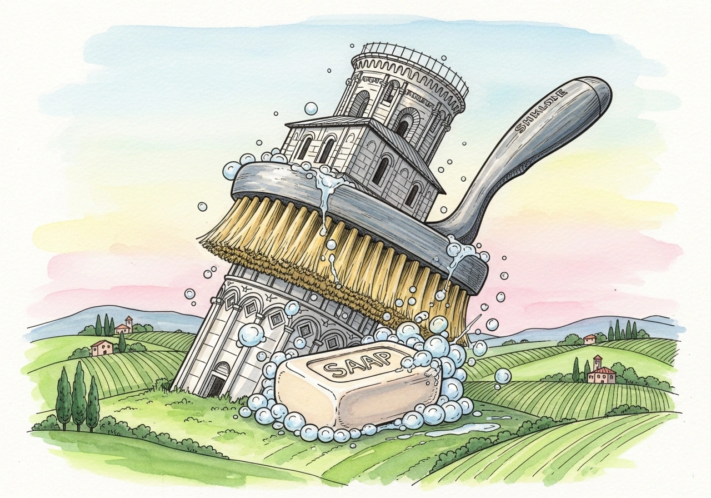
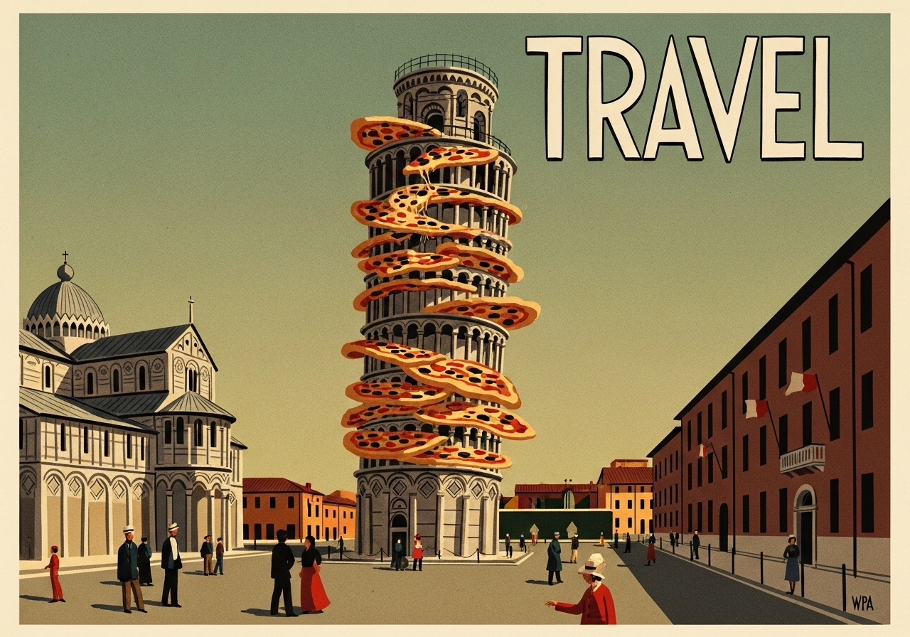

Challenge #017
🌎 Europe
Medium Puzzle
2 Parody Reviews
Leaning Tower of Pisa: Comical History & 1-Star Tourist Review
Tuscany's Tilted Romanesque Bell Tower Remains Stubbornly Unhelpful With the Kitchen Mop
Real Location
📍 Pisa, Italy
Coordinates
🧭 43.7230° N, 10.3966° E
Angry Reviewer
🗣️ SudsSufferer
⭐ The Confused Tourist’s 1-Star Review
★☆☆☆☆
“Seriously Misleading Name!”
Reviewed by SudsSufferer • Verified Misguided Visitor
“Not one mop in all of Tuscany... and still so crooked!”
Additional Tourist Complaints & Clues
- “The tilt made me dizzy; couldn't even scrub the floors effectively.”
- “Still leaning, never cleaning. What a dusty disappointment!”
Can you guess the punny parody landmark name from this review?
Test your wordplay in the interactive puzzle mode with progressive hints.
🎯 Solve Challenge #017 Live →
🏛️ The Real Leaning Tower of Pisa: A Field Guide
Begun in August 1173 as the freestanding campanile for Pisa's cathedral, the tower made it to the third story in 1178 before its architect, probably Bonanno Pisano, noticed that three meters of shallow foundation set in waterlogged clay and sea-sand was sinking on the south side. Fortunately for physics, Pisa spent the next century picking fights with Genoa, Lucca, and Florence, halting construction for nearly a hundred years and allowing the underlying soil to compress under the weight; had they finished on schedule, the tower would have toppled straight into the piazza. When Giovanni di Simone resumed work in 1272, he tried to compensate by building the upper floors taller on the downhill side, giving the 56-meter marble cylinder the subtle curve of a petrified banana.
Step through the Porta Santa Maria onto the Piazza dei Miracoli at 11:00 AM and you are greeted by the surreal sight of five hundred adults standing on the walkway with both hands raised in the air like silent-film mimes trapped in an invisible box. From every side angle, the lawn resembles a mass tai-chi class in which strangers take turns pretending to prop up, kick over, or balance the twelfth-century marble tower inside an ice-cream cone. If you pay twenty euros to climb the 251 internal steps, the 3.97-degree tilt creates the unsettling nautical sensation of walking up a spiral staircase during a force-eight gale, tossing you gently from the inner wall to the outer wall on every half turn.
That gravitational lurch only compounded the misery for @SudsSufferer, who arrived in Tuscany armed with rubber gloves and a bucket expecting the Cleaning Tower of Pisa. In 'Seriously Misleading Name!', our tidy critic complained that there was 'not one mop in all of Tuscany' inside the monument and that the pronounced tilt made it impossible to scrub the worn marble floors without getting dizzy. After Italian engineers spent thirty million euros between 1990 and 2001 extracting thirty-eight cubic meters of dirt to keep the tower from collapsing, it feels harsh to dock them four stars for not stocking lemon-scented Pine-Sol in the belfry.
💡 Practical Visitor Tip: Don't leave after ten minutes like the tour bus crowds; walk five minutes south to Piazza dei Cavalieri to see Vasari's sgraffito facades without a single person miming a karate chop in the air.
✉️ Official Management Reply & Parody Postcard
Want to play the puzzle first? Click Play Challenge #017 above, or expand the archive dossier below to see the parody landmark answer and management response.
🔓 Reveal Parody Answer, Illustrated Postcard & Owner Response (Spoiler)
Parody Landmark: Cleaning Tower of Pisa

Official Response from Management (Leaning Tower of Pisa):
“Dear @SudsSufferer, it's quite remarkable how you expected a historical bell tower to double as a cleaning service. Perhaps you confused our architectural tilt with a mop wringer?”
🎭 More 1-Star Parody Reviews of Leaning Tower of Pisa
Some landmarks inspire more than one spectacular tourist misunderstanding. Explore every unlocked PunFiction parody challenge for Leaning Tower of Pisa right here:
★☆☆☆☆
“This Place Really Crumbles!”
Reviewed by SlantedSlice • Verified Misguided Visitor
“This Italian 'masterpiece' just slumps... and tastes suspiciously cheesy.”
Additional Clues
- “Seriously, the foundation is uneven... and the toppings slide right off.”
- “It’s shaped like a massive round pie... and definitely needs straightening!”
This famous tilt took on a decidedly culinary meaning for SlantedSlice, who visited Tuscany expecting the "Leaning Tower of Pizza." Writing in "This Place Really Crumbles!", the reviewer claims the twelfth-century monument "tastes suspiciously cheesy," notes that "the toppings slide right off," and describes it as "shaped like a massive round pie." While a tall cylinder of white Carrara marble stacked in wedding-cake arcades does vaguely resemble an eight-decker deep-dish disaster, attempting to bite into a medieval Catholic belfry and complaining loudly about the structural integrity of its sliced pepperoni is how tourists end up in emergency Italian dental clinics.
🔓 Reveal Challenge #069 Parody Answer, Postcard & Owner Reply
Parody Landmark: Leaning Tower of Pizza

Official Response from Management (Leaning Tower of Pisa):
“Dear @SlantedSlice, we are a 56-meter marble bell tower, not a restaurant. Our historic structure is neither 'shaped like a pie' nor meant for your pepperoni cravings.”